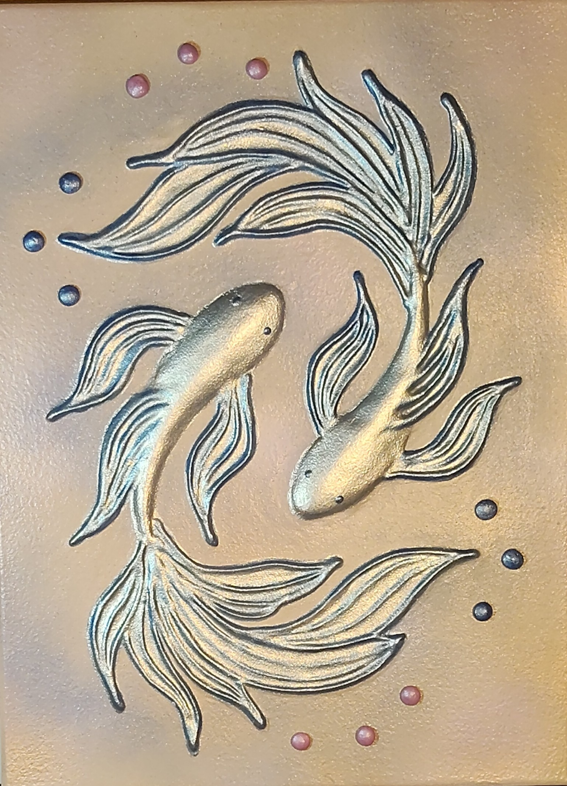

NICOLETA FILIP ART
PISCIS
Dos peces estilizados se mueven en sentidos complementarios, rodeados de líneas fluidas plateadas y doradas y pequeños detalles de color.
Sobre la obra
La obra representa dos peces de cuerpos curvos y aletas alargadas, organizados en una composición dinámica. Los trazos ondulantes sugieren movimiento acuático y los puntos decorativos completan el espacio.
Presentación artística
El contraste entre los reflejos plateados, los contornos oscuros y los acentos azules y rosados destaca el volumen de las figuras. La disposición circular aporta equilibrio y movimiento.
Ficha técnica
- Dimensiones
- 30 × 40 cm
- Soporte
- Lienzo
- Técnica
- Técnica estándar: pasta de relieve, pintura acrílica, aerosol metalizado y barniz protector.
- Categoría
- Fauna
Si deseas recibir información sobre esta obra, puedes solicitarla directamente.
SOLICITAR INFORMACIÓN →